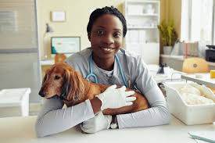

Tiyelani is the visionary behind Nelspruit Dog Adoption. She has dedicated her life to rescuing dogs from neglect, abuse, and abandonment in the Nelspruit area.
She manages adoption operations, volunteers, and partnerships with local shelters. Under her leadership, the organization has successfully rehomed over 300 dogs since its inception.
Tiyelani also leads community awareness programs about responsible pet ownership, fostering, and the importance of spaying/neutering pets.
Dr. Nkosi ensures that all rescued dogs receive high-quality medical care, including vaccinations, deworming, and surgical treatments when necessary.
She monitors the health of dogs in the shelter, provides guidance on nutrition and behavior, and works closely with adopters to ensure a smooth transition to their new homes.
Her expertise has helped reduce post-adoption health issues and increase adoption success rates, making him a vital member of the Nelspruit Dog Adoption team.
At Nelspruit Dog Adoption, we believe that every dog deserves a loving home. Our vision is a community where no dog is left behind, where compassion drives action, and where people and pets live in harmony.
We strive to educate, rescue, rehabilitate, and rehome. Our mission goes beyond adoption—it’s about creating a culture of kindness, one dog at a time.
Over the next five years, our goal is to expand our rescue network, open a permanent shelter, and train more volunteers to provide care and support for abandoned pets. By working hand-in-hand with the community, we are building a brighter future for animals in need.
Many of our volunteers join us with little experience but leave with unforgettable memories. From helping a scared puppy take its first confident steps, to watching a family fall in love with their new pet, the stories are endless.
One volunteer, Thandi, recalls the moment she helped rescue a dog trapped in an abandoned building. Today, that same dog is thriving in a family home. These stories remind us why we do what we do.
Another volunteer, Kabelo, says his proudest moment was seeing an injured dog he had nursed back to health finally get adopted. “It's not just about saving dogs,” he explains, “it's about saving people too. These dogs bring hope and healing to the families that take them in.”
Every story is a reminder that compassion has no limits, and that together, we can change lives—one adoption at a time.
You don't have to adopt a dog to make a difference. Our organization thrives because of the generous support from people like you.
Together, we can create a ripple effect of kindness across Nelspruit and beyond.